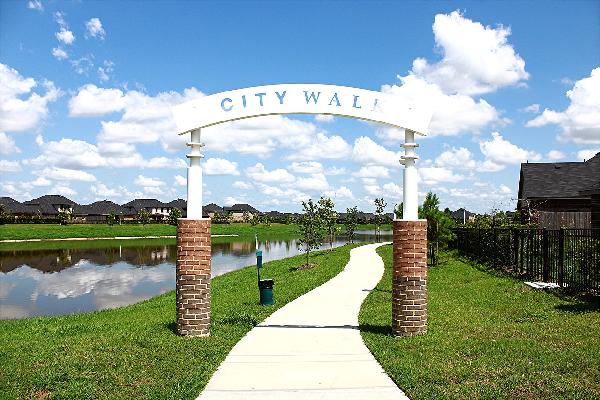
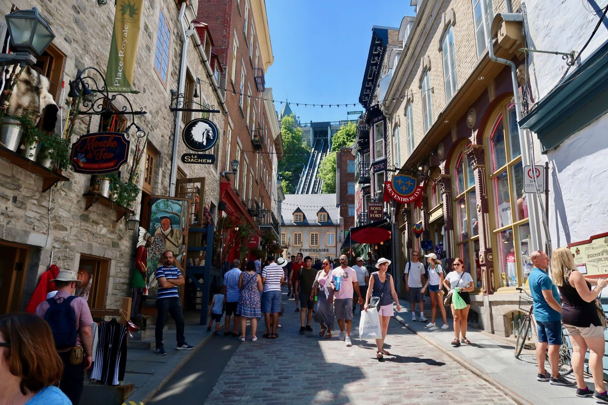
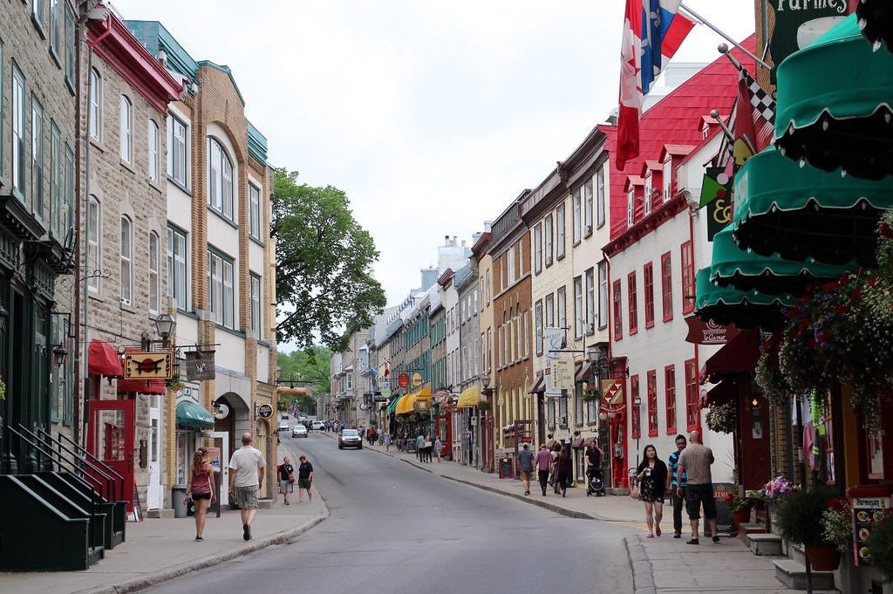

A walkable city is a city that is “walkable”. The term “walkable” was invented in the 1960s to explain the safety and accessibility of different cities. Walkability can be determined by quantity and quality of footpaths, outdoor safety, road conditions, other pedestrians rights-of-way, and building accessibility. Over the years the term could also include bike lanes and public areas like parks. The goal of a walkable city is to maximize walking and minimize driving. These cities link to kaitiakitanga as it respects the land, makes everyone live a more environment friendly lifestyle which helps protect the land from harm.
Walkable cities encourage a more healthy and eco-friendly lifestyle, minimizes carbon emissions from cars and allows people to be able to exercise and walk within their city. Walkable cities also prioritize respecting the topography (natural landscape) of the land. The main negatives about walkable cities is now cars are a little less convenient to drive around. There could be places with tight narrow gaps and places that have terrain that cars can’t access. This can be problematic for people who require cars to get around like disabled people. Also the larger the city the more impractical it is to prioritize walking because of the long distances people may have to travel. Public transport can help with this issue however. In most areas walkability in cities has more benefits than negatives and should be integrated over the years, everywhere.
Walkable cities have 3 main impacts. The 1st impact is the greater absence of carbon emissions and petrol. Due to the fact that walking is now easier and more convenient than driving it means less cars would be on the road which translates to lower carbon emissions. We can see this because during the height of the pandemic there was 50% less carbon emissions in transport. That is half the amount of what was normal. If we can reduce these emissions we can protect this land and make it last longer. Electrical cars could be a solution to this but they also harm the environment because of the material they require to be made. Instead of replacing petrol cars we should lessen the need for private transport using cars and instead prioritize walking and public transport. Walkable cities aim for this. The 2nd impact is a healthier city overall. Walking is great exercise and these cities promote it. This means on average these cities are healthier and fitter than other cities. Walkable cities allow us to exercise and protect our bodies. Those are the 2 main impacts of these cities which can greatly impact the entire world and make a healthier place.
